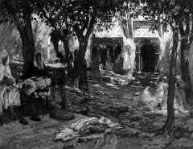

Çocukluğumuzda Boğaziçi bize, beni unuttular, diye küskün bir çehre göstermezdi. Sebep? Kendilerini unutmazdık zira. Kışta kıyamette de olsa, ayda bir defa olsun oradaki evlerimize gider, hatta gece misafirlikleri yapardık. Fakat bu gidiş ev halkıyla birlikte bir gidiş değildi; muhtasardı.[13] Mesela evin hanımı veya kızı yahut gelini, kâhya kadını veya bacısı bir iki kalfayı ve halayığı beraber alır, bu misafirliği yaparlardı. Maksat? Evi temizletmek, havalandırmak, hava açıksa güneşlendirmek ve rutubetini ısıtmakla kapalı yerleri küflendirmemekti.
Bu mihnetin[14] bir de meserret[15] tarafı vardı. O da aile ocağını temizlemek vesilesinin husule getirdiği bir değişiklikti. Güzel tarafı da görülürdü. Ev kadınlığının edasıyla gururluydu. Evet bunlar böyle olurdu; eski kadınlar ekseriyetle her şeyden evvel yuvalarının nezafet ve nezahetiyle iftihar ve iğtirar ederlerdi.[16] Sokak onlara âdeta angarya gibimsi bir şey gelirdi. “Sokak kadını” tabiri evvel zaman içinde pek hoşa gelecek vasıflar âdâtına[17] girmemişti; “sürtük” gibi bir şey demek olurdu. Sonra da zahmeti vardı. Feracelenmek; çarşaflanmak; giyinmek, kuşanmak; giydirmek, kuşatmak gibi... Masraflı idi de o zamanda hesabını bilenlere göre. Kalabalıkları olmayan adamlarda da böyle şeylere merak vardı. Ekserisi ufak tefek de olsa iki haneye sahip oldukları için yaz ise kışlık, kış mevsiminde yazlık evlerine gider, onu temizlerlerdi. Hülasa ev aşkı başta gelirdi. Herkes evini severdi.
Ne Yaparlardı?
Kadınlar ev hanımlıklarının zevkini tadarlardı. Evdekiler hisselerine düşen hizmetleri hüsnü ifa ederek[18] müsterih kalırlardı. Bunlardan sonra eğlenirlerdi. Saz veya şarkı meşk ederler; gergef veya kasnak veya mineler kadar güzel oyalar işlerler; entari veya çamaşır dikerler; tatlılar, reçeller kaynatırlardı. Selamlıkta aşçıbaşı olmasına rağmen gayet nefis ev yemekleri pişirirlerdi.
Günleri ayrılmıştı: Çamaşır yıkarlardı; evi baştan aşağıya kadar siler süpürürlerdi. Boş zamanlarda iskambil, peçiç gibi oyunlar oynarlar; eğlenirlerdi. Evde çocuk varsa onlarla meşgul olurlardı. Çalışmalarına, yatmalarına, kalkmalarına nezaret ve dikkat ederlerdi. Selamlıkta emektar ağalarla ayvazlar da uşaklara nezaret ederler, onları da işe alıştırırlardı; terbiye ederlerdi. Hareme, nispeten ahbabı, misafiri fazla olan selamlıkta da bir de misafir sofrası meşgalesi vardı. Tanıdıkların yemeğe gelmeleri davete muhtaç olmadığı için her zaman hazırlıklı bulunmak, zamanın icabındandı. Bazı vakitlerde harem yemeğinin de selamlığa verildiğini bendeniz bilirim. Yaz mevsimlerinde ve sayfiyelerde böylesi çok kere vaki olurdu. Zira apansız misafirler gelirdi.

Şöyle bir sual varit olabilir: Yalnız kapalı ev hayatı ve muttarit bir minval üzere imrar-ı hayat[19] monoton değil miydi? İtimat buyurunuz, hayır değildi. Zira günler münkasımdı[20] ve biri diğerine benzemezdi. Büyüğünde, küçüğünde; demek istiyorum ki saraylarda, konaklarda; tenha ve asude evlerde, yalnız yalnızlık yoktu. Arz ettiğim gibi gelen giden vardı. Hatta gece misafirleri vardı. Gece misafirleri mutat idi; muntazır idi.[21] Bu da monotoniyi dâfi[22] bir işti ve tabiatıyla dedikodu avunmaları da epeyi vakit geçirirdi. Zaten insan melek-rû[23] olsa bile melek-siret[24] olmadığı için herhangi halde olursa olsun yekdiğerine karşı haset veya biraz ehveni olan gıpta ile müterafık[25] bir zaafa müpteladır. Kıskançlık, çekememezlik, kendini beğenmeklik, her mânâda tefevvuk[26] iddiası; hele saraylarda gözdeliği gözlemek hırsı ve heyecanı, ev aşkının gerçi ezalı ve belki ifrata düşülürse cezalı edasıydı. Fakat mademki bu beşerî bir iptilâdır... Böyle diyebiliriz... Bir nevi distraksiyon, binaenaleyh monoton değil idi.
Aşk Kuvveti
Ev aşkı eski zamanlarda o kadar kuvvetli idi ki, saraylarda senelerce oturmuş, büyütülmüş, terfih edilmiş[27] ve ev bark sahibi edilmiş bir evin evladı gibi hüsnü muamele görmüşler bile efendi hanelerine misafireten gelip birkaç gece kaldıktan sonra mutlaka kendi evlerine, yuvalarına dönmeyi şiddetle arzu ederler, âdeta evciklerinin hasretini çekerlerdi. Yukarıda da arz ettim ya, sokak eski adamların nazarında bir nevi sürtüklük güzergâhı idi. İnsan bugünkü düşüncenin sirayetiyle, “Hey gidi eski ve eski kafalar hey...” diyeceği geliyor.
Akşam, 6 Nisan 1950